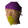

Mining Instructor

| Config name | newbie_mining_instructor |
| NPC id | 948 |
| Combat level | hidden |
| Options | Talk-to |
| Wander range | 2 tiles from spawn |
| Defined in | scripts/tutorial/configs/tutorial.npc |
Mining Instructor
An expert on mining related skills.
Show all 1 spawn on the world map → Open in knowledge graph →
Locations
| Area | Coordinates | Level | Count | Map |
|---|---|---|---|---|
| Tutorial Island (underground) | 3081, 9504 | 0 | 1 | view |
Dialogue
Mining InstructorHi there... You must be new around here. So what do I call you? 'Newcomer' seems so impersonal... and if we're going to be working together, I'd rather call you by name.
PlayerYou can call me .
Mining InstructorOk then, . My name is Dezzick, and I'm a miner by trade. Let's prospect some of those rocks.
PlayerTell me about prospecting again.
Mining InstructorIt's really very simple. Usually when you go mining you can see if there is ore in a rock or not by its color.
Mining InstructorIf you come across a rock you've not seen before and want to know what it is, or if you can't tell if a rock contains ore just by sight,
Mining Instructorthen simply right click on the rock and select 'prospect' to check closely. Anything else you wanted to know?
PlayerTell me about mining again.
Mining InstructorCertainly, . To mine you need a pickaxe. Different pickaxes let you mine more efficiently.
Mining InstructorYou have a bronze pickaxe there, which is the most inefficient pickaxe available, but is perfect for a beginner.
Mining InstructorTo mine, simply click on a rock that contains ore while you have a pickaxe with you, and you will keep mining the rock until you manage to get some ore, or until it is empty.
Mining InstructorThe better the pickaxe you use, the faster you will get ore from the rock you're mining.
Mining InstructorYou will be able to buy better pickaxes from the Dwarven Mine when you reach the mainland, but they can be expensive.
Mining InstructorAlso, the better the pickaxe the higher the Mining level required to use it will be. Was there anything else you wanted to hear?
PlayerTell me about smelting again.
Mining InstructorSmelting is very easy. Simply take the ores required to make a metal to a furnace, then use the ores on the furnace to smelt them into a bar of metal.
Mining InstructorFurnaces are expensive to build and maintain, so there are not that many scattered around the world. I suggest when you find one you remember its location for future use.
Mining InstructorAn alternative to using a furnace to smelt your ore is to use high-level magic to do it.
Mining InstructorAs well as letting you smelt ore anywhere, it has a guaranteed success rate in smelting all ores.
Mining InstructorSome metals, such as iron, contain impurities and can be destroyed during the smelting process in a traditional furnace, but magical heat does not destroy them.
Mining InstructorAnything else?
PlayerTell me about Smithing again.
Mining InstructorTake the hammer I have given you, or buy a new one from a general store, and proceed to a nearby anvil.
Mining InstructorWhen you use a metal bar on an anvil you will be be able to choose the item you want to smith, as long as you have a high enough Smithing level and the correct number of bars.
Mining InstructorIt's a pretty straightfoward skill as I'm sure you discovered while making me that lovely bronze dagger.
Mining InstructorThe higher Smithing level you reach, the better quality of metal you can work with. You start off on bronze and work your way up as your Smithing skills increase.
Mining InstructorAnything else, ?
PlayerNope, I'm ready to move on!
Mining InstructorOk then, .
PlayerI prospected both types of rock! One set contains tin and the other has copper ore inside.
Mining InstructorAbsolutely right . These two ore types can be smelted together to make bronze.
Mining InstructorSo now you know what ore is in the rocks over there, why don't you have a go at mining some tin and copper? Here, you'll need this to start with.
Mining InstructorThe rocks around here contain tin and copper. You should try mining some.
Mining InstructorNow that you have some ore, you should smelt it into a bronze bar. You can use the furnace over there to do so.
PlayerHow do I make a weapon out of this?
Mining InstructorOkay, I'll show you how to make a dagger out of it. You'll be needing this...
Mining InstructorSee if you can use the anvil here to make a bronze dagger.
Referenced in scripts
scripts/tutorial/scripts/guides/mining_instructor.rs2